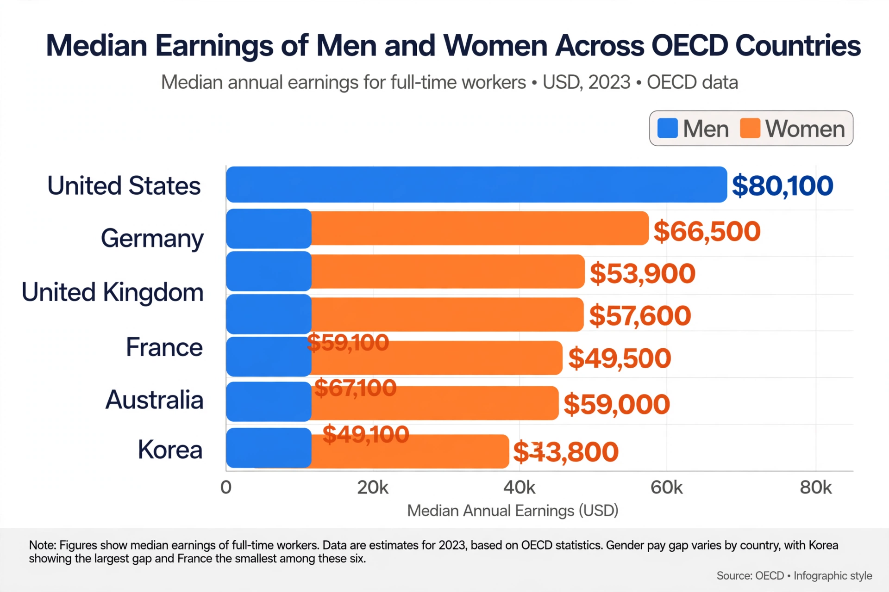

The gender pay gap or gender wage gap is the average difference between the remuneration for men and women who are working. Women are generally found to be paid less than men, in nearly every country and occupation. There are two distinct measures: the unadjusted (or raw) gap, which compares average (usually median) earnings of all men and all women, and the adjusted gap, which accounts for differences in hours worked, occupations chosen, education, and job experience. In the United States, for example, the unadjusted average female's annual salary has commonly been cited as about 78–84 per cent of the average male salary; the adjusted gap is smaller, though estimates of the remaining, unexplained portion vary.
| Gender pay gap | |
|---|---|
 Unadjusted gender pay gaps across OECD countries. | |
| Definition | Average difference in remuneration between working men and women |
| OECD average | ~11–12% (median, early 2020s) |
| Key factors | Occupational segregation, hours, career breaks, motherhood penalty, discrimination |
| Policy tools | Equal pay laws, pay transparency, parental leave |
Research attributes the gap to a combination of factors. Women and men are unevenly distributed across industries and occupations ("occupational segregation"), and female-dominated work tends to be paid less. Women work fewer paid hours on average and are more likely to work part-time or take career breaks for caring responsibilities; childbirth in particular is associated with a long-run earnings penalty for mothers — the "child penalty" — which event studies across countries identify as a major driver of the remaining gap. Differences in negotiation, promotion rates, and seniority contribute, and a residual share is commonly attributed to direct or indirect discrimination, though its size is contested. The gap widens with age and is larger at the top of the earnings distribution ("glass ceiling") and, in some countries, at the bottom ("sticky floor").
The headline figure depends heavily on methodology: mean versus median earnings, hourly versus annual pay, inclusion of part-time workers, and which control variables are included in adjustment. Critics of the unadjusted figure argue it does not compare like with like; critics of heavily adjusted figures argue that the "explanatory" variables — occupation, hours, and career interruptions — themselves reflect social expectations and workplace structures rather than free choice alone. The influential 2009 CONSAD report for the U.S. Department of Labor found an adjusted gap of roughly 4.8–7.1 per cent, whereas later studies find child-related penalties and occupational sorting explain most, but not all, of the raw difference.
Equal pay legislation dates to the U.S. Equal Pay Act of 1963 and Article 119 of the Treaty of Rome (1957) in Europe. Recent measures include mandatory pay-gap reporting for large employers (United Kingdom, 2017), Iceland's equal pay certification requirement (2018), and the EU Pay Transparency Directive (2023). Interventions shown in research to narrow gaps include pay transparency, structured salary bands, paid parental leave for both parents, and affordable childcare.